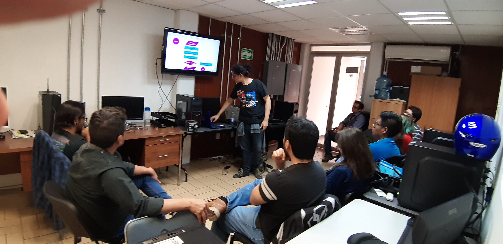

Nuevas actividades de divulgación
Cuando se publiquen eventos en la hoja aparecerán automáticamente en este espacio.
Laboratorio de Semántica Computacional CInC · UAEM
Divulgación
Seminarios, talleres, encuentros y actividades para acercar la investigación a nuevas comunidades.

Un espacio para conversar sobre lenguaje, inteligencia artificial, cognición y sus aplicaciones.
Los eventos pueden administrarse desde la pestaña Divulgación de la hoja de contenido.
Agenda
Cuando se publiquen eventos en la hoja aparecerán automáticamente en este espacio.